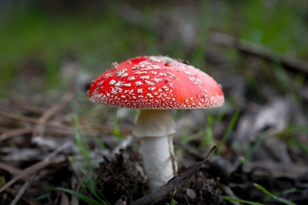

Cientistas usam cogumelos para fazer chips biodegradáveis
Cientistas acreditam que as peles biodegradáveis podem ser um material alternativo sustentável para utilização em eletrônica
Coletar fungos não serve apenas para trazer cogumelos para o cardápio. Uma nova pesquisa demonstrou que as peles de cogumelos podem fornecer uma alternativa biodegradável a alguns plásticos utilizados em baterias e chips de computador, tornando-os mais fáceis de reciclar.
Os pesquisadores da Universidade Johannes Kepler, na Áustria, estavam trabalhando em eletrônica flexível e extensível, com foco em materiais sustentáveis para substituir materiais não degradáveis, quando fizeram sua descoberta, publicada na revista “Science Advances” na sexta-feira (11).
“Tivemos uma participação importante do acaso”, disse à CNN Martin Kaltenbrunner, chefe da Divisão de Física de Matéria Macia da universidade e coautor do artigo.
Na época, um membro da equipe tentava usar materiais derivados do fungo em outras áreas. O trabalho levou ao estudo mais recente, que mostra como a pele do cogumelo Ganoderma lucidum pode funcionar como substituto do substrato utilizado nos circuitos elétricos.
Um substrato é a base de um circuito que isola e resfria os metais condutores que se encontram sobre ele. Normalmente, os substratos são feitos de plásticos não degradáveis, descartados após o uso.
A equipe, liderada por Doris Danninger e Roland Pruckner, do Instituto de Física Experimental da universidade, descobriu que o cogumelo (que normalmente cresce em árvores de madeira maciça apodrecidas na Europa e no Leste da Ásia) forma uma pele protetora compacta feita de micélio, uma rede semelhante à raiz, para proteger o seu meio de crescimento (a madeira).
“Eles fazem isso para se protegerem da entrada de outros fungos ou bactérias”, explicou Kaltenbrunner. Ele contou que a equipe conseguiu colher a proteção isolante descascando a pele e secando-a.
De acordo com o artigo da pesquisa, a pele é ligeiramente menos isolante do que o plástico, mas ainda assim agiu com segurança e sucesso nos circuitos elétricos, com uma espessura semelhante ao papel e a capacidade de suportar temperaturas superiores a 200ºC, tornando-a um bom substrato.
A pele tem muitas propriedades que a distinguem de outros materiais biodegradáveis. “Mas, acima de tudo, ela pode simplesmente ser cultivada a partir de madeira residual e não necessita de processamento com uso intensivo de energia ou alto custo”, completou Kaltenbrunner.
“O nosso micélio é uma espécie de ponto ideal porque pode durar muito tempo se for mantido seco, mesmo que, num composto doméstico normal, ele se degrade completamente no espaço de duas semanas ou menos”, acrescentou.
Embora o trabalho da equipe seja atualmente experimental e esteja ainda longe de ser colocado na produção em massa, os cientistas acreditam que as peles biodegradáveis podem ser um material alternativo sustentável para utilização em eletrônica que não requer circuitos elétricos duradouros, como monitores pessoais de saúde vestíveis e etiquetas (ou tags) NFC para dispositivos eletrônicos.
Ao mesmo tempo, eles imaginam uma utilização mais ampla se conseguirem controlar o crescimento do micélio de modo uniforme e reprodutivo.
Kaltenbrunner lembra que há grandes quantidades de madeira residual, como aparas de madeira da serra industrial, que é alimento para muitos cogumelos.